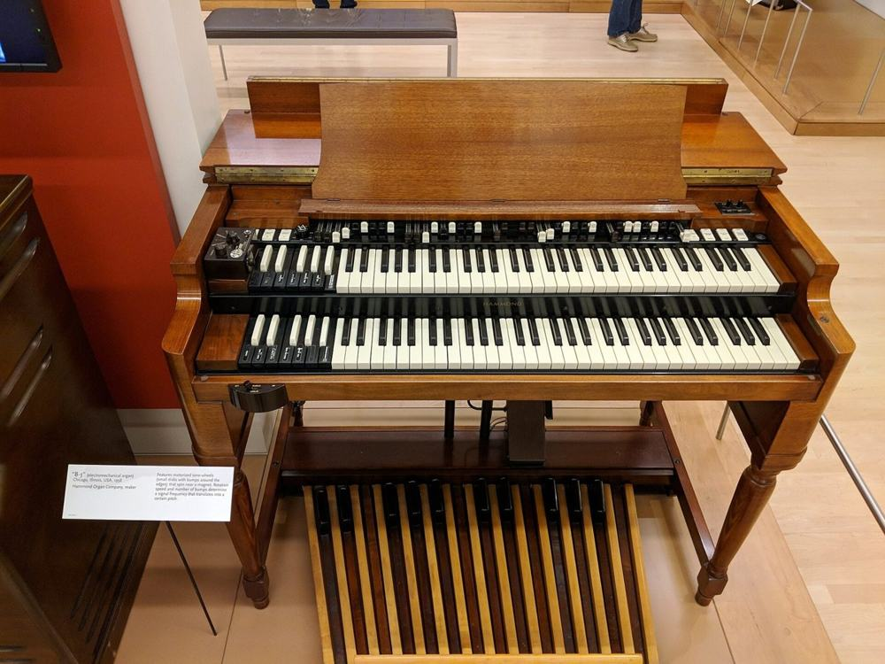
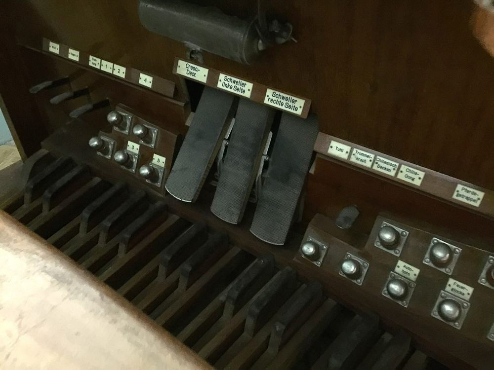

故事
教堂裡的風琴，被他搬進了爵士俱樂部。他叫 Jimmy Smith，原本是彈鋼琴的。五十年代初，他聽到 Hammond 電風琴，決定換樂器。
一台 Hammond B3 加上喇叭箱，重量超過兩百公斤。據說他把風琴搬進倉庫，關起門來練了大約一年。他用左手和腳負責低音，右手彈旋律。

一個人，就能撐起一整個樂團的聲音。1956 年他一出道，風琴就變成爵士的主角之一。後來一整代風琴手，跟著他走進了俱樂部。下次聽到又厚又熱的風琴聲，想想那個關在倉庫裡練琴的人。
故事後面
Jimmy Smith 原本彈鋼琴，五十年代初改彈 Hammond 電風琴。據說他關起門練了大約一年，才找到自己的彈法。
他用左手和腳負責低音，右手彈旋律，一個人就能撐起整個樂團。
他讓風琴在爵士裡變成主角，也影響了後來的靈魂爵士和放克。

這樣聽
聽風琴的音怎麼忽大忽小、像在呼吸，那是喇叭箱在轉。
逐句英文
He carried the church organ into the jazz club.
His name was Jimmy Smith, and he started on piano.
In the early 1950s he heard a Hammond organ and decided to switch.
A Hammond B3 with its speaker cabinet weighs more than 200 kilograms.
Reportedly he moved the organ into a warehouse and practiced behind closed doors for about a year.
His left hand and feet handled the bass, his right hand the melody.
One person could carry the sound of a whole band.
When he debuted in 1956, the organ became one of jazz's lead voices.
A whole generation of organists followed him into the clubs.
Next time you hear that thick, hot organ sound, think of the man practicing in a warehouse.
查證筆記與出處
「倉庫練一年」是傳記常見說法，時間長短各版本不同，寫據說。B3 本體約一百九十公斤，加喇叭箱超過兩百公斤是我算的，請核對。
https://en.wikipedia.org/wiki/Jimmy_Smith_(musician)
https://en.wikipedia.org/wiki/Hammond_organ
一分鐘影片版在 Instagram @jazz101tw。